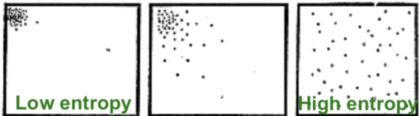
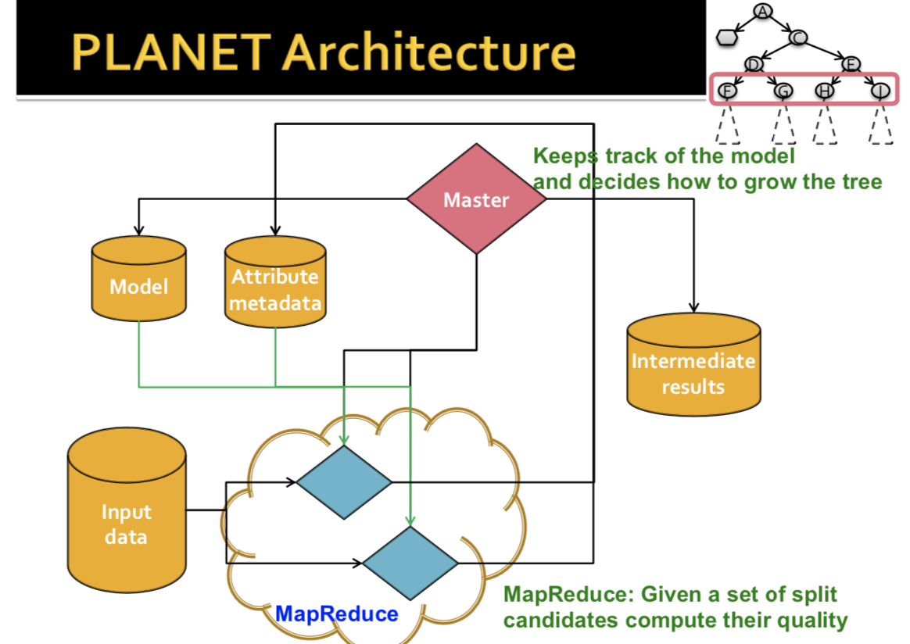
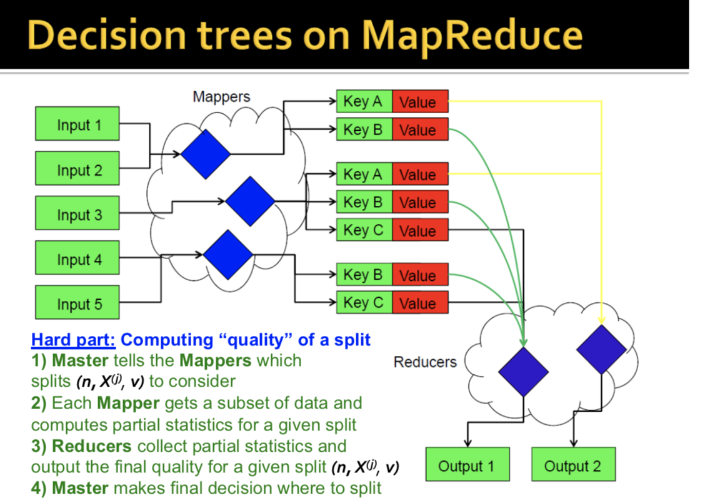
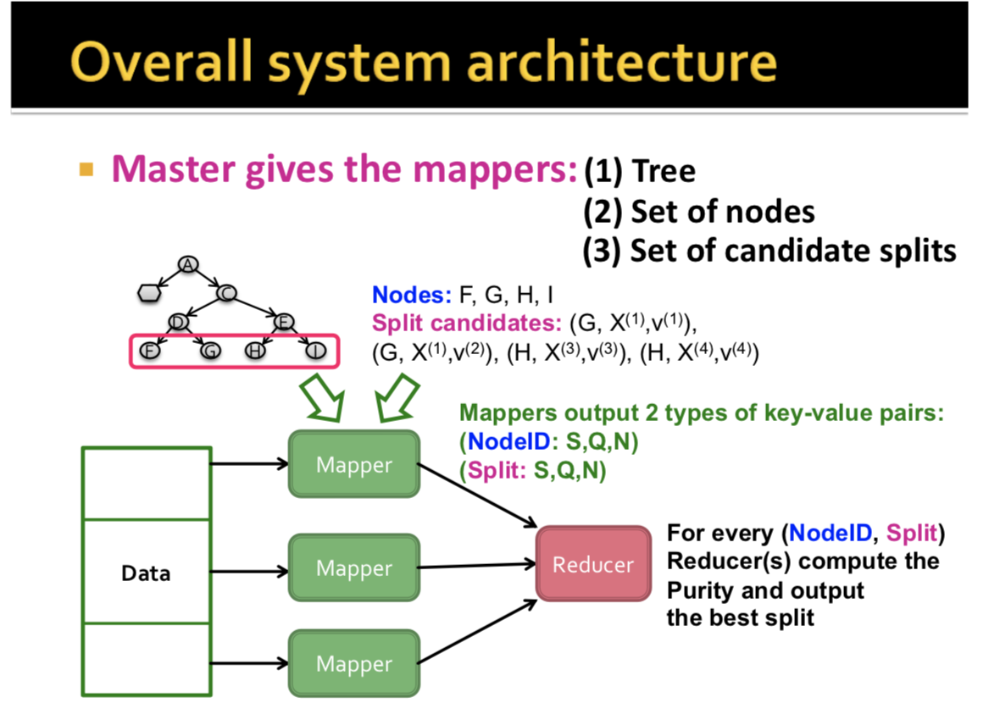
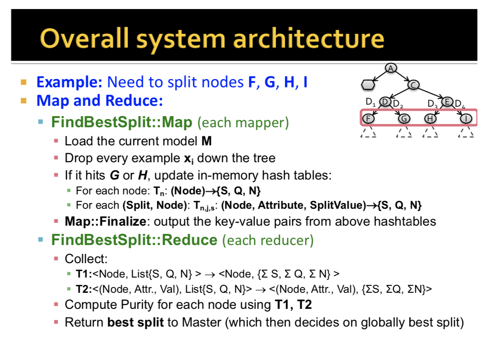
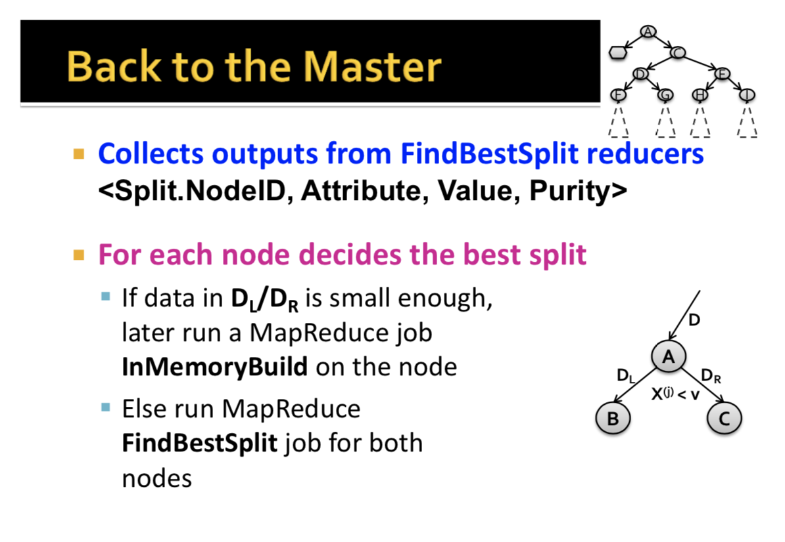

Large Scale Machine Learning
Size of data affects model performance much more than a fancy model (even Naive Bayes performs very well). - "The Unreasonable Effectiveness of Data"
Decision trees can handle a fund hundred/maybe our to a thousand features.
Important to do early stopping to prevent overfitting.
Decision trees:
- Split the data at each internal node. Split conditions are < or > constants.
- At every node, we have a decision: Do we continue building the tree? (StoppingCriteria)
- If yes, which variable and which value do we use for a split? (FindBestSplit)
- If no, how do we make a prediction? (FindPrediction)
FindBestSplit is the hardest and we focus on that here, StoppingCriteria and FindPrediction are pretty basic and we go over in the appendix.
FindBestSplit: How to split?
Regression: Use purity:
That is, the difference of variance of the data coming in, and the sum of the variances of the data coming out is as large as possible. If the decrease in variance is as large as possible, we have increased the purity of our data.
By variance, we mean variance in the output labels: Var(D)=1n∑i∈D(yi−y¯)2
Classification: Use information Gain
Measures how much a given attribute X tells us about the calss Y.
IG(Y|X): We must transmit Y over a binary link. How many bits on average would it save us if both ends of the line knew X?
Aside: Entropy
Def: Entropy: The smallest possible number of bits on average per symbol needed to transmit a stream of symbols drawn from X's distribution.
The entropy of X is defined as
H(X)=−∑j=1mp(Xj)logp(xj)
Low entropy: X is from a uniform distribution (entropy= 1 if evenly distributed, 0 if all the same), High entropy: X is from a varied (peaks/valleys) distribution. A histogram of the frequency distribution of values of X would have many lows and one or two highs.
Information Gain (Used for classifications)
Def: Specific conditional entropy:
- H(Y|x=v) - the entropy of Y among only those records in which X has value v.
Def: Conditional Entropy:
- H(Y|X) - The average specific conditional entropy of Y = ∑jP(X=vj)H(Y|x=vj).
- = If you chose a record at random and you know the row's value of X, what will be the entropy of Y.
- = Expected number of bits to transmit Y if both sides will know the value of X.
Def: Information Gain:
IG(Y|X)=H(Y)−H(Y|X)
I must transmit
Y, how many bits on average would it save me if both ends of the line knew
X?
Tells us how much info about Y is contained in X.

PLANET - Building Distributed Decision Trees Using MapReduce
General considerations when building a tree:
Sometimes, dataset too large to keep in memory, or dataset too big to scan over in a single machine.
PLANET - Parallel Learner for Assembling Numerous Ensemble Trees.
(Panda et al, 2009] Still the state of the art for building large-scale decision trees. A sequence of Spark jobs builds a decision tree. SPark MLLib Decision Trees are based on PLANET.
Setting:
- Handles hundreds of numerical (discrete and continuous, but not categorical) attributes (although prob now extended)
- Target variable is numerical: Regression (although prob now extended)
- Splits are binary; X(j)<v
- Decision three is small enough for each mapper to keep in memory, but full data is too large to keep in memory.
PLANET Architecture:
Master keeps track of the model and decides how to grow the tree. The tree is grown level by level, where each level is one MapReduce job.
Master takes the current model, the attribute metadata, and the input data, and builds the next level of the tree. These MapReduce jobs each get a set of split candidates and compute their quality.

Algo:
Tree is built in levels. For each level:
1. Master decides candidate splits (n,X(j),v) and tells each mapper which splits (n,X(j),v) to consider.
2. Each mapper gets a subset of data and computes partial statistics for a given split.
3. Reducers collect partial statistics and ourput the quality for a given split (n,X(j),v).
4. Master makes the final decision as to where to split and grows the tree for one level.
\

Here is a summary of the breakdown of tasks between mapper, reducer, and master: (2)
-
Mapper loads the current Tree model and info about which attribute splits (split is a tuple <NodeID, Attribute, Value>) to consider.
- Each mapper sees a subset of the data D∗
- Mapper classifies each datapoint d using the tree to find the leaf node L where d lands
- For each leaf node L mapper keeps statistics about
- the data reaching L
- The data in the left/right subtree under some split s.
-
Reducer aggregates the statistics (i),(ii) above and determines the best split for each tree node.
-
Master monitors everything and runs multiple MapReduce jobs, below.
In total, there are three types of MapReduce Jobs
- MapReduce Initialization (ron once first)
- For each attribute, identify values to be considered for splits.
- MapReduce FindBestSplit (run multiple times, once per level)
- Mapreduce job to find best split (when there is too much data to fit in memory)
- MapReduce InMemoryBuild (run once last)
- Similar to BuildSubTree but for small data.
- Grows an entire sub-tree once the data fits in memory.
Output: a model file: A file describing the state of the model.
PLANET Components:
Master Node:
- Controls the entire process
- Determines teh state of the tree and grows it
- Decide if nodes should be split
- If there is little data entering a tree node, Master runs an InMemoryBuild MapReduce job to grow the entire subtree below that node.
- FOr larger nodes, Master launches MapReduce FindBestSplit to evaluate candidates for the best split. Master also collects results from FindBestSplit and chooses the best split for a node.
MapReduce Initialization:
- Main question: which splits to even consider?
- A split is defined by a triple: (node n, attribute X(j), value v).
- Intiatlization: Identify all the attribute values needed to be considered for split. The initalization process generates 'attribute metadata' to be loaded in memory by other tasks. (4)
- We use hashing to perform the split. Suppose we want B buckets. First hash the data, then sort and then take B-1 equally spaced splits. (5)
- To speed this up in practice, hash to spread out the data, sample and take equally spaced splits in the sample to compute the split boundaries. Very easy.
MapReduce FindBestSplit:
Goal: For a particular split node n find attribute X(j) and value v that maximize purity
|D|⋅Var(D)−(|DL|⋅Var(DL)+|DR|⋅Var(DR))
where
D,DL,DR are the parent, left child, and right child datasets produced by the split.
Note that Var(D)=1n∑i∈D(yi−y¯)2
=1n∑i∈Dy2i−(1n∑i∈Dyi)2.
Important observaition: Variance can be computed from sufficient statistics: N,S=∑yi,Q=∑y2i
- So each mapper processes subset of data Dm and computes Nm,Sm,Qm for its own Dm.
- Each reducer combines the statistics and computes global variances and then purity:
Var(D)=1∑mNm∑mQm−(1∑mNm∑mSm)2
The process for each component is as follows:
Mapper
-
Mapper is initialized by loading results of initialization task
- Current model (to find which node each datapoint x_i ends up)
Attribute metadata (all split points for each attribute)
Load the set of candidate splits ({node, attribute, values})
-
For each data record run the Map Algo:
- For each tree node store statistics of the data entering the node and at the end emit to all reducers:
- For each split, store statistics and at the end emit
- <SplitID, {S, Q, N} >
- SplitID = {nodeID, Attribute X(i), split value v}
Reducer
- Load all the <NodeID, List {S_m, Q_m, N_m}> pairs and aggregate per node statistics.
- For all the <SplitID, List {S_m, Q_m, N_m}> aggregate the statistics:
Var(D)=1∑mNm∑mQm−(1∑mNm∑mSm)2
For each NodeID, output the best split found.

Summary


Ensemble of Decision Trees
- Bagging
- How to use random samples of the dataset? You can use hashing.
- Random forest is feature bagging on top of bagged decision trees. Start of the art on calssification problems with dense features.
Appendix:
(1)
StoppingCriteria: When to stop splitting?
If you split too much, you overfit.
Two ideas for when to stop:
- When the lead is pure in calssification, or in regression, when var(y)<ϵ for a low threshold ϵ
- When # of examples in the leaf is too small, ex. |D|<100.
FindPrediction: How to Predict?
Regression
- Predict average yi of the examples in the lead
- Build a linear regression model on the examples in the leaf
Classification:
- Predict most common y_i of the examples in the leaf.
(2) Breakdown of tasks:
Mapper:
- Considers a number of candidate splits )node, attribute, valie) on its subset of the data.
- For each split it stores partial statistics
- Partial split-statistics are sent to Reducers.
Reducer:
- Collects all partial statistics and determines best split.
Master:
- Grows the tree for one level.
(3) For small data, we can sort the values along a particular feature and consider every possible split. But data values may not be uniformly populated os many splits may not really make a difference.
(4)Technically initializaion only generates (attribute, value), and the master will append the node later.
(5) We split in a fashion such that we use a limited number of splits such that splits 'move' about the same amount of data. We heuristically compute a 'historgram' on data and bucketize it such that the counts per bucket are equal. We do it by hashing. Note we must use an 'equi-depth' hash function.
(6) Note that the split candidates are only uniformly distributed among mappers in the beginning, as the mappers split the tree, the split candidates are no longer uniformly distributed. That is okay, if we wanted to remake the split candidates each round the algo would take 2x the time.